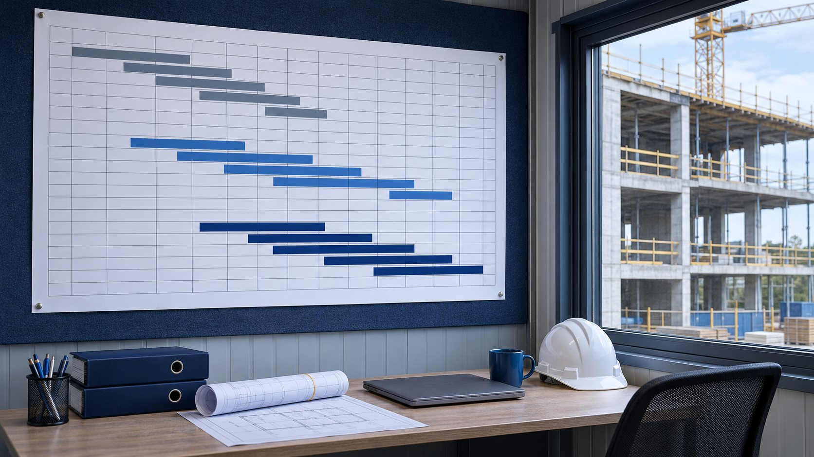

VALUE ENGINEERING
When a cheaper substitution costs more
A lower unit rate is only the start of the story. The real comparison is net value across function, transition cost, whole-life cost and risk.

HANDOVER
Completion, handover and readiness to operate are not the same milestone
A building can be physically complete and still not ready to open. Treating three distinct milestones as one is a common cause of late, disputed handovers.
CONSTRUCTION MANAGEMENT
Progress reports that mask exposure
A progress percentage can look healthy while cost and time risk build up underneath. Verified progress, based on accepted work, tells the real story.
PROJECT MANAGEMENT
Mobilization gates: starting a project on a dependable baseline
The first weeks of an appointment decide how reliable everything after them will be. Five gates turn a handover of documents into a working baseline.
PROJECT MANAGEMENT
Risk management that changes decisions
A risk register is only useful if it changes what the project does. Every risk needs an owner, a trigger and a response that is checked for effect.
DESIGN MANAGEMENT
Controlled design release: protecting the brief from drawing to site
Late or inconsistent design information is one of the main causes of delay and cost growth. Coordinated, controlled release keeps the brief intact all the way to construction.
CONTRACTS
Contracts and claims: evidence before entitlement
Claims are won and lost on records made at the time, not arguments made later. A disciplined process protects both the client's position and the working relationship.

PROJECT CONTROLS
Schedule recovery: keep the baseline, the forecast and the plan distinct
When a project slips, the temptation is to redraw the programme. Real recovery starts by keeping three things separate: what was planned, what is now likely, and what it would take to recover.
INFORMATION MANAGEMENT
Receipt, review, approval and authorization are different events
Many site errors start in the document register, not on site. Controlled information means everyone knows which version is current and what it may be used for.